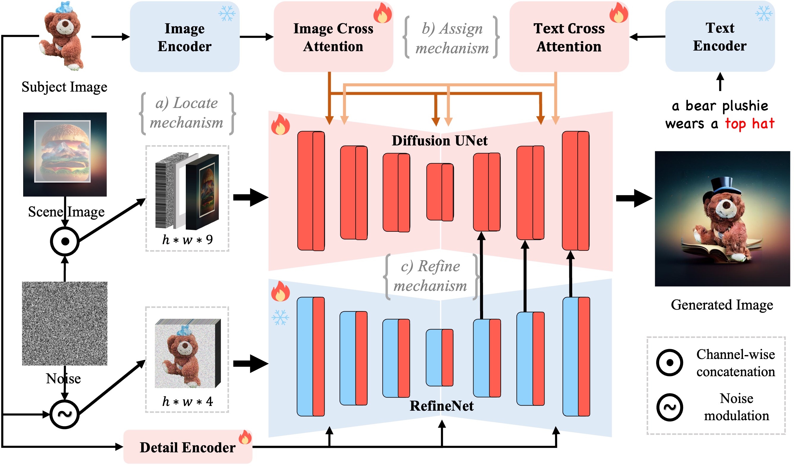
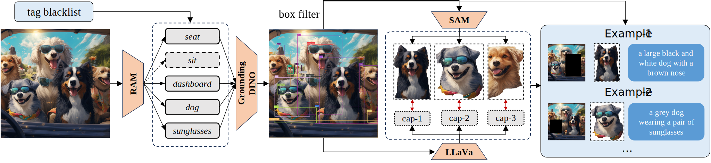

Locate, Assign, Refine: Taming Customized Image Inpainting with Text-Subject Guidance

LAR-Gen is a unified image inpainting framework that supports text-guided, subject-guided and text-subject-guided inpainting simutaneously.
LAR-Gen is a unified image inpainting framework that supports text-guided, subject-guided and text-subject-guided inpainting simutaneously.
Prior studies have made significant progress in image inpainting guided by either text or subject image.However, the research on editing with their combined guidance is still in the early stages. To tackle this challenge, we present LAR-Gen, a novel approach for image inpainting that enables seamless inpainting of masked scene images, incorporating both the textual prompts and specified subjects. Our approach adopts a coarse-to-fine manner to ensure subject identity preservation and local semantic coherence. The process involves (i) Locate: concatenating the noise with masked scene image to achieve precise regional editing, (ii) Assign: employing decoupled cross-attention mechanism to accommodate multi-modal guidance, and (iii) Refine: using a novel RefineNet to supplement subject details. Additionally, to address the issue of scarce training data, we introduce a novel data construction pipeline. This pipeline extracts substantial pairs of data consisting of local text prompts and corresponding visual instances from a vast image dataset, leveraging publicly available large models.Extensive experiments and varied application scenarios demonstrate the superiority of \method in terms of both identity preservation and text semantic consistency.
The whole framework consists of three key mechanisms: the Locate mechanism concatenates the noise with masked scene image and mask to compel the model to seamlessly inpaint the masked region while keeping the background unaltered; the Assign mechanism, indeed a decoupled cross-attention mechansim, achieves text compatible subject guidance on denoising process; the Refine mechanism utilizes a RefineNet to gradually supplement the subject details, facilitating subject identity preservation. The fire icon indicates that the module parameter requires tuning, while the snow icon signifies that no tuning is needed.
The pipeline involves a sequence of automated processes including categorization, detection, segmentation, and captioning. As a result, it creates region-level quadruplets that include a scene image, a scene mask, a subject image, and a text prompt.
Unlike other methods that depend solely on textual or visual prompts, LAR-Gen achieves customized image inpainting by leveraging both the subject image and text prompt.

Image Strength

Module

UNet Backbone
SD-1.5

SD-XL